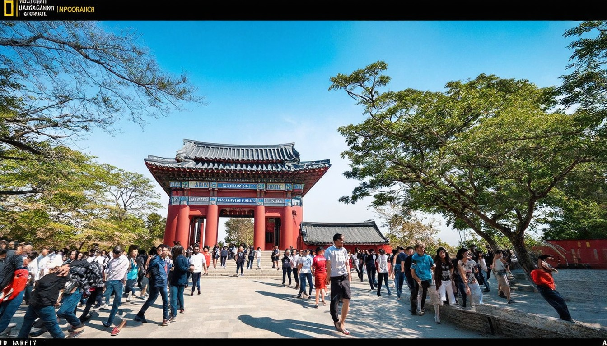
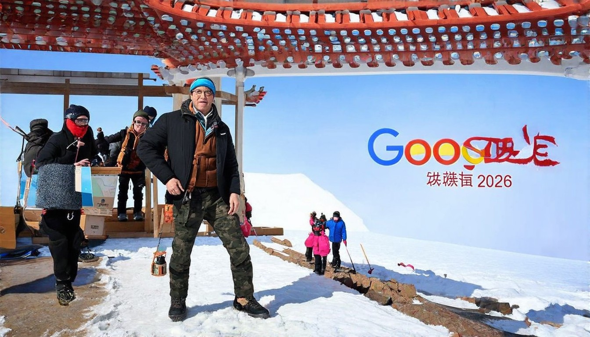
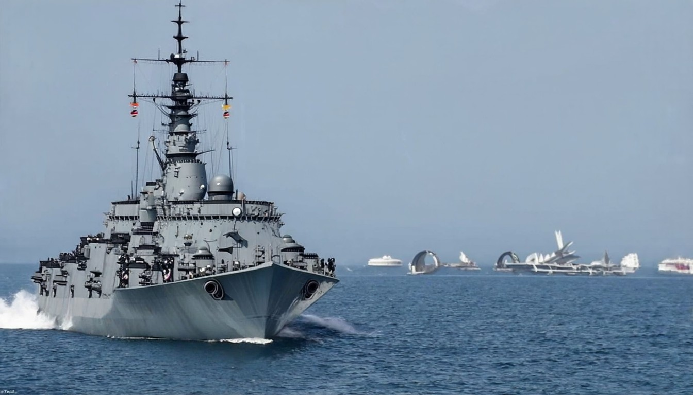
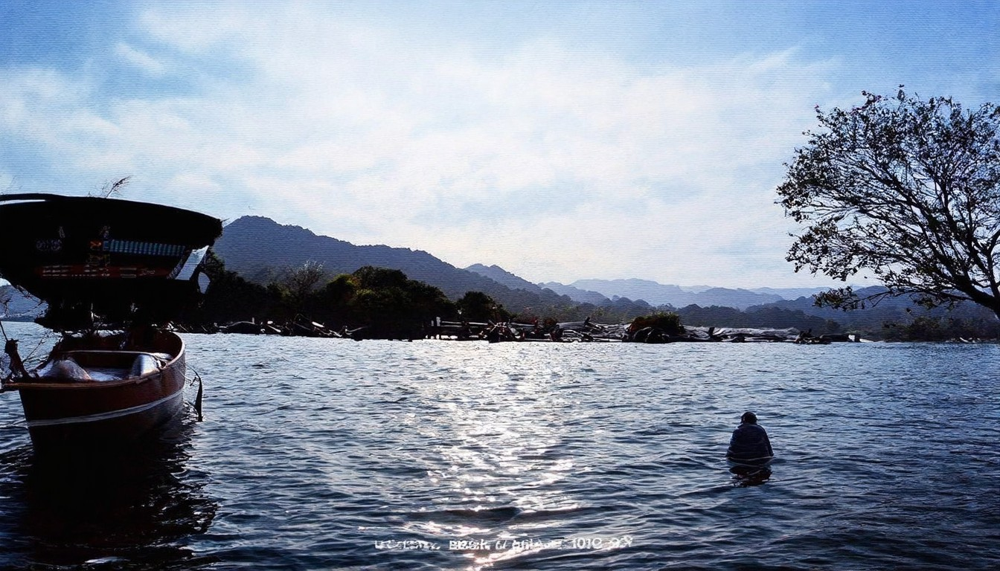

今日新闻 今日新闻摘要（2026年04月14日） 国际新闻1. - 今日头条
特朗普10日刚宣布要封锁霍尔木兹海峡，伊朗立马放出两段视频，一段是革命卫队海军拦截美军驱逐舰，一段是无人机监控画面。伊朗军方说得很硬气，这条海峡完全在
2026年04月16日 · 全球热点速递
← 返回今日新闻特朗普10日刚宣布要封锁霍尔木兹海峡，伊朗立马放出两段视频，一段是革命卫队海军拦截美军驱逐舰，一段是无人机监控画面。伊朗军方说得很硬气，这条海峡完全在

据俄罗斯媒体报道，俄罗斯驻伊朗大使杰多夫31日在接受采访时表示，伊朗最高领袖穆杰塔巴·哈梅内伊目前身在伊朗，但“出于显而易见的原因”避免公开露面。杰多夫
提供者智通财经. 2026年4月15日. 停火预期推动“买入狂欢”：全球股市全面收复战争失地美元或惨遭17年最长连跌. 提供者智通财经. 2026年4月15日. 谈判预期、强劲财报推升

展开. 新浪财经. [2026年4月15日] 埃基蒂克重伤噩耗：跟腱断裂确认，已确定无缘2026年美加墨世界杯. 22 小时前. 展开. 新浪网. 恩比德缺席附加赛_新浪新闻. 3 小时前. 展开.

bastillepost.com/ 逢星期一至五，早上7:30-8:30am，星期六、日10-11am，巴士的報《晨早直播》，充滿養份認識世界，香港國際 ... ｜灼見政治｜2026-04-13.
2026年第1季赴日消費居各國之冠大陸仍排第三 · 日本觀光廳今天公布，2026年1月至3月期間，訪日外國人在日本國內的消費總額推估為2兆3378億日圓（約新台幣4651億... 2026-04-15
* [](https://www.voachinese.com/a/israeli-offensive-against-hezbollah-continues
TradeWinds 4月14日报道称，Mercuria据称已在中国船厂签下VLCC和LR2新造船订单，总投资规模约6.5亿美元。. TradeWinds 4月14日报道称，SGMF（Society for Gas as a Marine Fuel，船用气体燃料协会）最新发布的第三版LNG船用燃料生命周期评估（LCA）认为，与船用柴油相比，LNG作为船用燃料的温室气体排放可降低最多29%；DNV和
本網站使用相關技術提供更好的閱讀體驗，同時尊重使用者隱私，點這裡瞭解中央社隱私聲明。當您關閉此視窗，代表您同意上述規範。. Your browser does not appear to support Traditional Chinese. Would you like to go to CNA’s English website, “Focus Taiwan”? + 吳德榮：鋒面4/17起掠
### 我的頻道. ## 褻瀆慰安婦雕像惹議 美網紅遭南韓法院判刑6個月. ## 川普自曝與習近平通信 稱習答應不提供伊朗武器. ### 美伊原則上同意再會面 伊朗堅持不改「10點方案」. ### 伊朗戰爭分散注意 澤倫斯基：美無暇顧及烏克蘭. ### 獨居者避免傳達這14訊號 讓歹徒認有機可趁. 國家廣播公司 (NBC) 女主播葛瑟瑞 (Savannah Guthrie) 的母親南茜 (Nanc
# 月國際新聞排行. B-52轟炸機飛越伊朗 為何足以說明戰爭走向B-52轟炸機飛越伊朗 為何足以說明戰爭走向. 川普：伊朗給美國送一份大禮 今天到了川普：伊朗給美國送一份大禮 今天到了. 美軍對伊作戰亮出新「王牌」：低成本無人機美軍對伊作戰亮出新「王牌」：低成本無人機. 【直播】《堅不可摧》全球首映及座談會【直播】《堅不可摧》全球首映及座談會. 川普：中共若向伊朗運送武器 將有大麻煩川普：中共若
新华每日电讯 经济参考 瞭望 半月谈 中证报 上证报 中国记者 中国名牌 中国传媒科技 环球 瞭望东方周刊 参考消息 新华出版社. 北京 天津 河北 山西 辽宁 吉林 上海 江苏 浙江 安徽 福建 江西 山东 河南 湖北 湖南 广东 广西 海南 重庆 四川 贵州 云南 西藏 陕西 甘肃 青海 宁夏 新疆 内蒙古
推荐 深圳 视频 直播 专题 教育 房产 财经 消费 健康. 深圳特区报2026-04-15 ###### 罗湖区彩虹桥路段“三分离”通行 深圳交警推进电动自行车“守序”行动. ### 刚发布就亮相！广东首台宇树r1机器人亮相华强北 播放播放. ### 让世界听到我们的声音！“中华文化少年说”走进西浦基础教育集团上步小学 播放播放. ### 坪山春印象｜花海童趣两相宜！这个岭南特色公园好逛又好看

*  ### [菲律宾指控中国渔民在南海倾倒氰化物](https://www.bbc.com/zhongwen/
《真．木可心經》諷柯文哲爭議爆紅網笑：民眾黨應列早課 · 「剴剴案」兒盟社工犯過失致死等罪一審判刑2年 · 京都男童遭棄屍！ 女店員揭「爸媽詭異行為」：想起來怕怕的 · 天氣／強
## 动态新闻. 2025年12月7日，由清华大学社科学院中欧关系研究中心主办的“新局势下的欧洲与中国”研讨会在清华大学逸夫图书馆从游空间顺利举行。来自清华大学、中国社会科学院、中国人民大学、北京外国语大学、广东外语外贸大学、中国海油集团能源经济研究院等机构的专家学者出席会议。清华大学社科学院中欧关系研究中心执行主任漆海霞老师主持了开场致辞。清华大学中欧关系研究中心理事会副主席史志钦教授在致辞中表